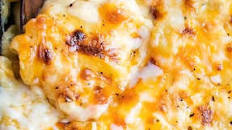

Macoroni and Cheese

Deliciously rich and gooey, this baked mac and cheese is creamy, comforting, and PERFECT for the holidays, as well as a comforting family dinner!
Ingredients
1 lb. dried elbow pasta
1/2 cup unsalted butter
1/2 cup all purpose flour
1 1/2 cups whole milk
2 1/2 cups half and half
4 cups shredded medium cheddar cheese divide (measured after shredding)
2 cups shredded Gruyere cheese divided (measured after shredding)
1/2 Tbsp. salt
1/2 tsp. black pepper
1/4 tsp. paprika smoked paprika is our favorite!
Steps
- Preheat oven to 325 degrees F and grease a 3 qt baking dish (9x13"). Set aside.
- Bring a large pot of salted water to a boil. When boiling, add dried pasta and cook 1 minute less than the package directs for al dente. Drain and drizzle with a little bit of olive oil to keep from sticking.
- While water is coming up to a boil, shred cheeses and toss together to mix, then divide into three piles. Approximately 3 cups for the sauce, 1 1/2 cups for the inner layer, and 1 1/2 cups for the topping.
- Melt butter in a large saucepan over MED heat. Sprinkle in flour and whisk to combine. Mixture will look like very wet sand. Cook for approximately 1 minute, whisking often. Slowly pour in about 2 cups or so of the half and half, while whisking constantly, until smooth. Slowly pour in the remaining half and half and the whole milk, while whisking constantly, until combined and smooth.
- Continue to heat over MED heat, whisking very often, until thickened to a very thick consistency. It should almost be the consistency of a semi thinned out condensed soup.
- Remove from the heat and stir in spices and 1 1/2 cups of the cheeses, stirring to melt and combine. Stir in another 1 1/2 cups of cheese, and stir until completely melted and smooth.
- In a large mixing bowl, combine drained pasta with cheese sauce, stirring to combine fully. Pour half of the pasta mixture into the prepared baking dish. Top with 1 1/2 cups of shredded cheeses, then top that with the remaining pasta mixture.
- Sprinkle the top with the last 1 1/2 cups of cheese and bake for 15 minutes, until cheesy is bubbly and lightly golden brown.